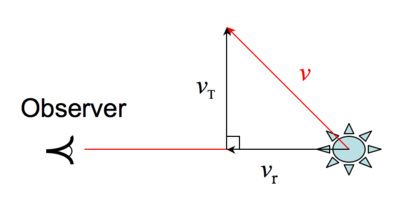

The component of a object’s velocity that is perpendicular to our line of sight.

Aa star’s transverse velocity vT can be determined if the distance D and proper motion μ are known. These are related by the following formula where the proper motion is in natural units (radians per unit time):
vT = μD
A common problem when calculating the transverse velocity of a star occurs when people mix the units of proper motion, velocity and distance. When the distance D, to a star is in kiloparsecs and the proper motion μ, in milliarcseconds per year, the formula becomes:
vT = 4.74 (μD) km/s
The constant of 4.74 arises from the combination of the conversions of distance (kpc to km), angle (from milliarcseconds to radians), and time (from years to seconds).